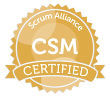

I am Gaurav.
Supply Chain AI & GenAI Leader.


15+ years of architecting AI-first, data-driven supply chain solutions for Fortune 500 clients across manufacturing, retail, and technology sectors.
Pioneered the "Self-Curating Supply Chain" concept · Principal Consultant at Infosys · MBA, IMT Ghaziabad · Pune, India

AWS CSCPPioneered the "Self-Curating Supply Chain" concept and deployed LLM-based solutions (GPT-4, LLaMA, Gemini) for material planning, supplier risk, and procurement intelligence.
Led end-to-end SC transformations for Fortune 500 clients using Kinaxis RapidResponse, Control Tower analytics, and cloud-native platforms on AWS and Azure.
Built Infosys's Supply Chain Centre of Excellence with 50+ practitioners. Managed IP roadmaps, pricing strategy, and forged research partnerships with IITs and global universities.
Principal Consultant – Domain Consulting, Supply Chain AI
Leading Infosys's AI-first supply chain practice — building GenAI products, driving market development, and defining the roadmap for next-generation autonomous supply chain solutions. Authored the AI Blueprint for Supply Chain used as a reference framework across Infosys practices.
Business Analyst – Investment Banking Technology
Built a data analytics function from the ground up within the investment banking unit. Delivered automation solutions using Alteryx, Tableau, and Instabase; built the firm-wide Business & Technology Resiliency platform.
Consultant – Supply Chain Practice
Led supply chain consulting engagements for global technology, energy, and manufacturing clients. Served as Product Owner for a world-leading DMS vendor, managing 3 Agile sprint teams. Conceptualised an early Supply Chain Control Tower framework that became a forerunner to Infosys's current AI-enabled offering.
Operations Manager – Service Delivery
Managed a team of 40; transformed an underperforming unit to consistently exceed all business targets within 12 months through structured coaching and process automation.
Assistant Manager – Supply Chain Execution
Supervised end-to-end project activities for engineer-to-order defence systems across naval dockyards; coordinated with government agencies for project approvals.
Let's discuss how AI can transform your supply chain.
CONTACT ME